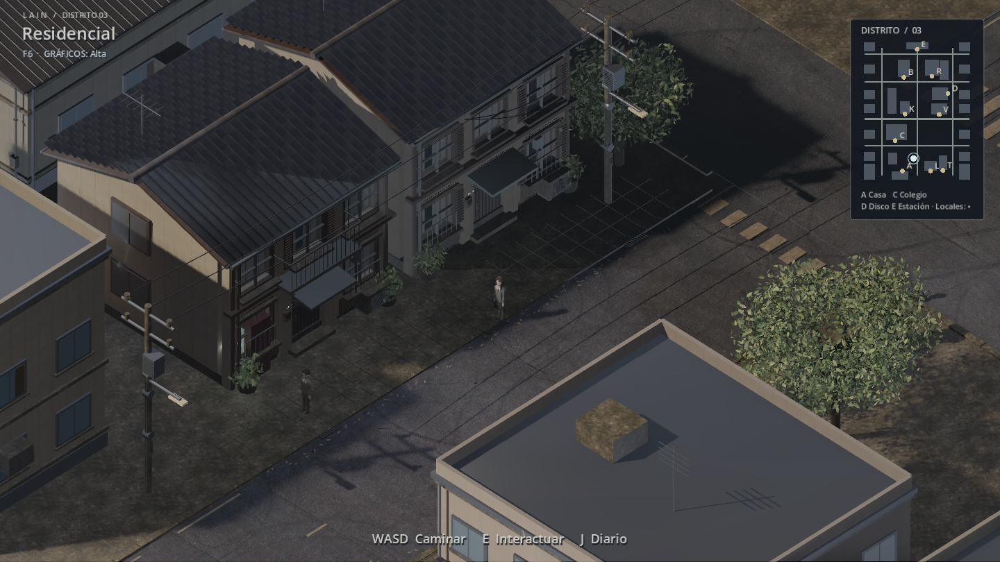
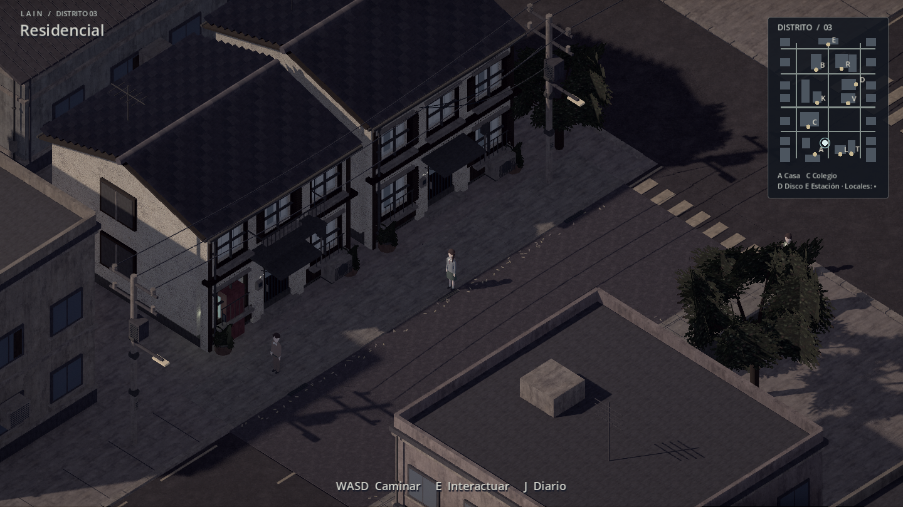

Capturas reales de Godot, con la misma cámara y resolución. Desliza para comparar los materiales, la iluminación y la vegetación.


ANTES · CITY09AHORA · VISUAL 0.10 / ALTAEstado de prueba desconectado del servidor, con habitantes del catálogo público. Sin retoque de imágenes. La geometría de algunos edificios y personajes sigue siendo sencilla; este pase mejora su presentación y no reproduce todo el detalle de la ilustración de referencia. Notas de la entrega